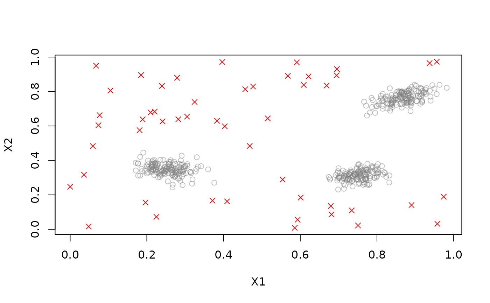
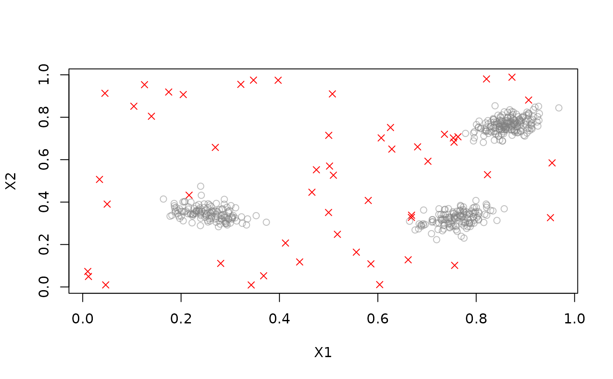

The abstract class for all data stream outlier detectors. Cannot be instantiated. Some DSC implementations also implement outlier/noise detection.
Details
plot() has an extra logical argument to specify if outliers should be plotted
as red crosses.
See also
Other DST:
DSAggregate(),
DSC(),
DSClassifier(),
DSRegressor(),
DST(),
DST_SlidingWindow(),
DST_WriteStream(),
evaluate,
predict,
stream_pipeline,
update
Other DSOutlier:
DSC_DBSTREAM(),
DSC_DStream()
Examples
DSOutlier()
#> DSOutlier is an abstract class and cannot be instantiated!
#>
#> Available subclasses in ‘package:stream’ are:
#> DSOutlier_DBSTREAM,
#> DSOutlier_DStream
#>
#> To get more information in R Studio, type ‘DSOutlier_’ and hit the Tab key.
#' @examples
set.seed(1000)
stream <- DSD_Gaussians(k = 3, d = 2, noise = 0.1, noise_separation = 5)
outlier_detector <- DSOutlier_DBSTREAM(r = .05, outlier_multiplier = 2)
update(outlier_detector, stream, 500)
outlier_detector
#> DBSTREAM
#> Class: DSOutlier, DSC_DBSTREAM, DSC_Micro, DSC_R, DSC
#> Number of micro-clusters: 24
#> Number of macro-clusters: 3
points <- get_points(stream, 20)
points
#> X1 X2 .class
#> 1 0.7046965 0.2979011 2
#> 2 0.2578214 0.3649571 1
#> 3 0.2895283 0.3503316 1
#> 4 0.1894980 0.3657286 1
#> 5 0.8666055 0.7918349 3
#> 6 0.2024423 0.3823156 1
#> 7 0.7107048 0.2431962 2
#> 8 0.2165495 0.3045713 1
#> 9 0.7861133 0.3499173 2
#> 10 0.5027768 0.6438663 NA
#> 11 0.8435481 0.7835473 3
#> 12 0.2344477 0.3924386 1
#> 13 0.7724696 0.3352106 2
#> 14 0.8511139 0.7779633 3
#> 15 0.7453567 0.3037277 2
#> 16 0.2339508 0.3482525 1
#> 17 0.7778976 0.3611979 2
#> 18 0.8978351 0.8102061 3
#> 19 0.7712736 0.2778483 2
#> 20 0.2738916 0.3348790 1
# Outliers are predicted as class NA
predict(outlier_detector, points)
#> .class
#> 1 16
#> 2 11
#> 3 6
#> 4 18
#> 5 15
#> 6 18
#> 7 23
#> 8 14
#> 9 2
#> 10 NA
#> 11 7
#> 12 12
#> 13 2
#> 14 7
#> 15 17
#> 16 14
#> 17 20
#> 18 15
#> 19 3
#> 20 14
# Plot new points from the stream. Predicted outliers are marked with a red x.
plot(outlier_detector, stream)

evaluate_static(outlier_detector, stream, measure =
c("noiseActual", "noisePredicted", "noisePrecision", "outlierJaccard"))
#> Evaluation results for micro-clusters.
#> Points were assigned to micro-clusters.
#>
#> noiseActual noisePredicted noisePrecision outlierJaccard
#> 10.0 9.0 1.0 0.9
#> attr(,"type")
#> [1] "micro"
#> attr(,"assign")
#> [1] "micro"
# use a different detector
outlier_detector2 <- DSOutlier_DStream(gridsize = .05, Cl = 0.5, outlier_multiplier = 2)
update(outlier_detector2, stream, 500)
plot(outlier_detector2, stream)

evaluate_static(outlier_detector2, stream, measure =
c("noiseActual", "noisePredicted", "noisePrecision", "outlierJaccard"))
#> Evaluation results for micro-clusters.
#> Points were assigned to micro-clusters.
#>
#> noiseActual noisePredicted noisePrecision outlierJaccard
#> 14.0000000 15.0000000 0.9333333 0.9333333
#> attr(,"type")
#> [1] "micro"
#> attr(,"assign")
#> [1] "micro"